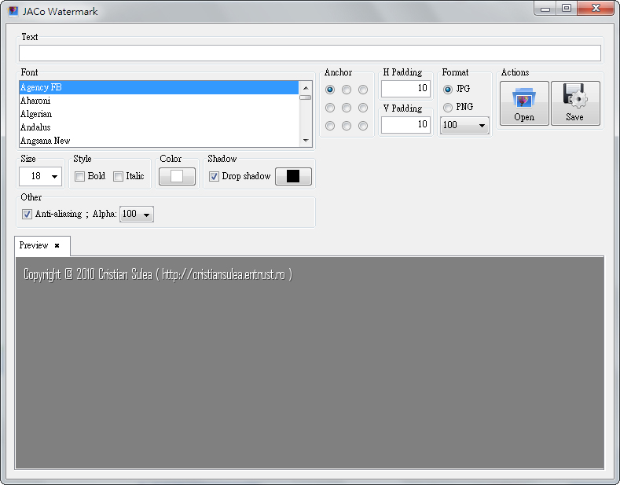
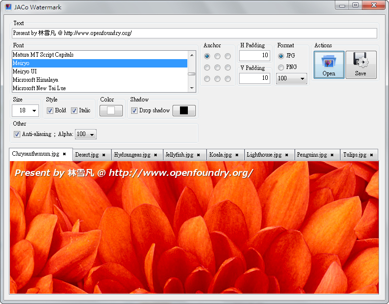

JACo Watermark － 給圖片加上文字浮水印

介紹版本：0.2.0
官網：https://jaco-watermark.sourceforge.net/
授權：LGPL-3.0+
簡介
JACo Watermark 是款介面簡單優雅，功能最小化的「文字浮水印」嵌入軟體。本軟體與其他大雜燴軟體不同，僅提供了這一項功能，但產生的效果相當不錯。
程式目前不支援其他作業系統，只能在 Windows 平台下使用。
安裝說明
請到 JACo Watermark 的官網 (https://jaco-watermark.sourceforge.net/?page=2_download) 下載程式。
JACo Watermark 是綠色軟體，免安裝就可執行。但因為是用 JAVA 寫的，系統上需要預裝 JAVE 運行環境 (JRE) 才能執行。如果因為缺乏 JRE 無法執行程式，可以前往 JAVA 官網 (https://java.com/zh_TW/download/manual.jsp) 下載並安裝 JRE。
介面與操作
想啟動 JACo Watermark，只要將從官網處下載的壓縮檔解壓縮，並在程式資料夾中找到 JACo Watermark.bat 檔案，在上面雙擊就可以了。
▲ 圖1：JACo Watermark 啟動時的截圖
使用方法非常簡單。
請拿起滑鼠，點擊右邊的【Open】按鈕，接著選擇想加上浮水印的圖片（可多選）。JACo Watermark 支援 gif、jpg、jpeg、png 這幾種輸入格式。
選妥後按下確定，螢幕就會變成圖2 的樣子。
▲ 圖2：匯入圖片後，JACo Watermark 會變成以上這樣。
請在最上面的長條空欄中，輸入打算插入的浮水印文字，接著在下方選擇水印字型、字體大小、粗斜體、字體顏色與字體陰影等格式。
注意有些字型不支持中文字，如要輸入中文字請避開他們。（別擔心，您能透過最下方的預覽視窗確認）
最下面的 Anti-aliasing 選項，可以讓文字顯得平滑，建議打勾。Alpha 代表水印的透明程度，數值介於 0 到 100 之間，0 意味著完全透明；若想讓文字呈現透明感，請調整此值。
右方的 Anchor 可設定水印要嵌在圖片的哪個角落，預設是嵌入到左上角。H Padding 與 Y Padding 則可指定水印與圖片邊緣的距離。
Format 欄位可讓您選擇要用 jpg 還是 png 格式進行輸出。如果選擇用 jpg 輸出，下面還會提供輸出品質供人選取；數字愈大品質愈好，但當然也愈佔空間啦。
面板最下面有許多標籤頁。您可以選擇不同的標籤頁，來預覽圖片被嵌入水印後的樣子。
將上述項目全數設置妥當後，就可以使用【Open】旁邊的【Save】按鈕來產生圖片。【Save】會讓使用者選擇一個資料夾，將所有東西全數儲存到指定的資料夾裡面去。
後記
JACo Watermark 非常簡單，全部功能就只有上述這些。但添加浮水印的效果確實很不錯，方便易用之餘，也不容易出現操作錯誤。
如果這就是您所需要的功能，儘管把這東西抓來用吧！